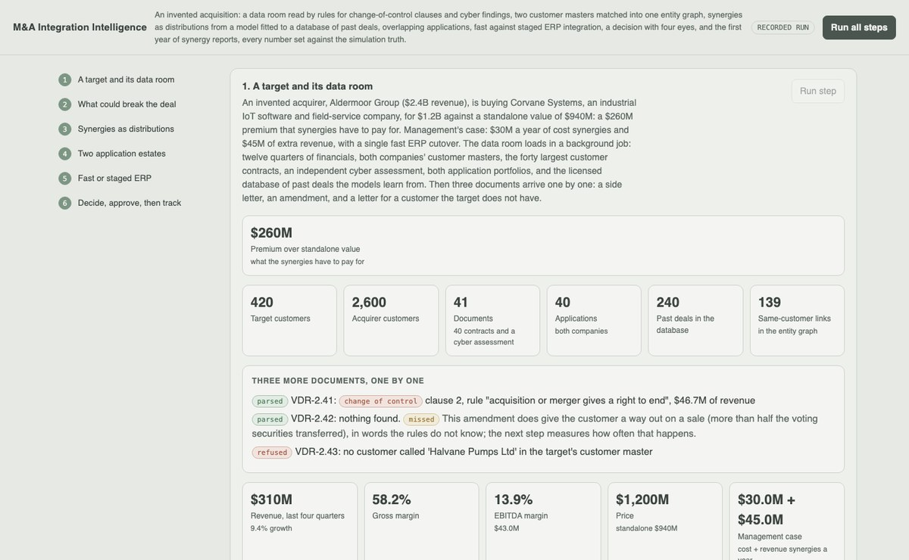
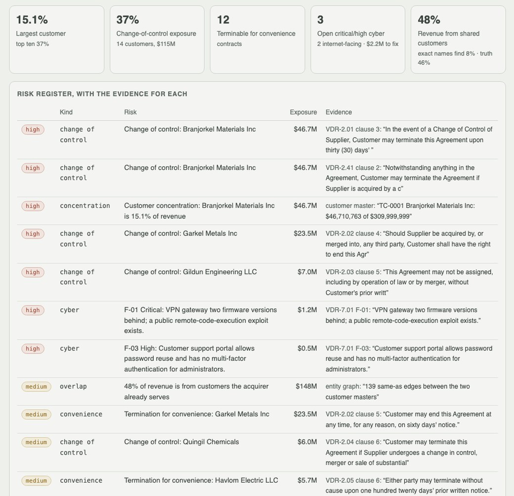
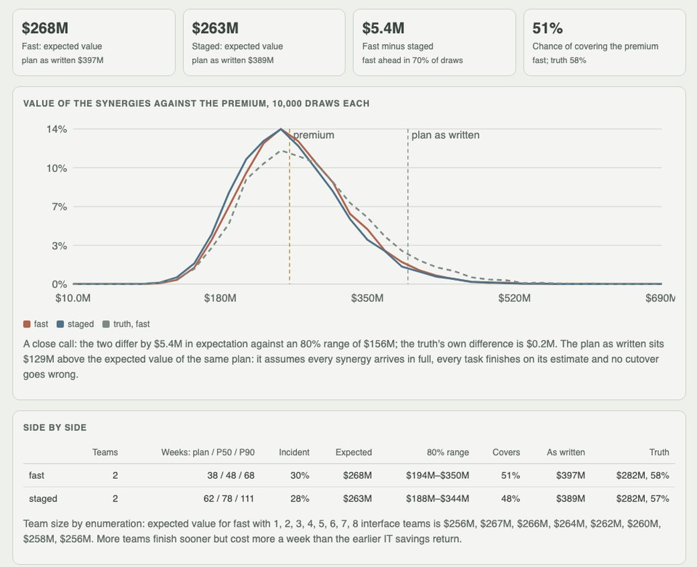

Python · Statistics · Monte Carlo · 2026-10
Will the Synergies Pay for the Premium?
An invented $1.2B acquisition read end to end: contract rules that find 14 of 16 change-of-control exits (and say which wording they miss), two customer masters matched into one entity graph, synergies as distributions from a model fitted to 240 past deals, and fast against staged ERP integration by Monte Carlo against a $260M premium (51% chance of covering it, where the plan as written says $397M).

Built from a written blueprint as one vertical slice. Everything is simulated: the acquirer, the target, both customer masters, the contracts, the cyber report, both application portfolios and the database of past deals come from a generator in the repository, with a hidden true process the models never see; it is shown beside every result only to score them. The contract and cyber "extraction" is hand-written rules and the executive summary is filled-in templates: no language model is used. The matching, the rules and the clusters were written by the same hand as the generator, so their recall is an upper bound. Not built: OCR and data-room connectors, a graph database, key-person and litigation risk, revenue lost to change-of-control exits inside the value model, Kafka, Kubernetes, SSO.
01 — The problem
An acquirer pays a premium over what the target is worth alone, and the synergies are supposed to pay it back. Management's case says how much; the history of deals says acquirers usually get most of the cost synergies and much less of the revenue, that ERP programmes run late, and that a cutover can stop orders for weeks. Meanwhile the data room hides contracts that let big customers walk on a change of control. Can a platform read the data room, put honest distributions on the synergies, compare a fast and a staged integration against the premium, and keep score after close?
Blueprint 20 of twenty in a fourth build book, built as its demo scenario end to end.
02 — What I built
A Python service on PostgreSQL with a background worker and a web page, started by one docker compose up.
- A synthetic data room: financials, 420 and 2,600 customers, forty contracts, a cyber assessment, 40 applications, and 240 past deals generated from a true process the models never see.
- Risk rules with evidence: change-of-control and convenience clauses, open cyber findings, concentration, each stored with the sentence it came from.
- An entity graph from matching the two customer masters.
- A synergy model fitted to every report of every past deal, including those still ramping and those that went quiet.
- Fast against staged ERP: critical-path plans, team size by enumeration, 10,000 draws each against the premium.
- Four-eyes decisions, quarterly realisation tracking, and an executive summary that cites its rows.
03 — How it was built
- 01
A data room with a truth behind it
The generator writes the target's twelve quarters ($310M revenue, 13.9% EBITDA), 420 customers with a heavy tail (the largest is 15.1%), and the acquirer's CRM, which holds 30% of them in its own spellings plus sister companies with the same name and another legal suffix. Forty contracts mix five change-of-control wordings and three convenience wordings into boilerplate. The 240 past deals realise their synergies through a log-linear process with two kinks the model is not told about, and disclose at their first anniversary and at their latest date, unless they fell behind and went quiet.
weak = (np.exp(lc) < 0.7) | (np.exp(lr) < 0.3) silent = (months > 12) & weak & (r.random(n) < 0.75) - 02
Rules that say what they missed
Sentence rules flag change-of-control and convenience clauses; a regular expression reads each cyber finding; every risk is stored with its document, clause and sentence. The rules find 14 of the 16 change-of-control contracts with no false alarms: fourteen customers, 37% of revenue. They miss one wording every time ("more than fifty percent of the voting securities", which never names the event), so the page calls the exposure a floor, and an amendment uploaded in the demo with that kind of wording is shown being missed.
((r"\b(acquired|merged? (into|with)|merger|...)\b", r"\b(terminat\w*|end this agreement)\b"), "acquisition or merger gives a right to end") - 03
Synergies from deals that are not finished
A fifth of the past deals are still ramping and more than a quarter of the older ones went quiet. Bankers' comparables (deals three years on that still disclose) run high; taking every latest figure as final runs low. The model fits log(reported / announced) to the deal's features plus k·log(months/36) for the ramp plus a deal effect and reporting noise, by maximum likelihood over every report. On fresh deals its median error is 0.13–0.14 of the case for cost and 0.16 for revenue, against 0.18–0.19 and 0.51–0.53 for management's case, and its 80% intervals cover 75–83%.
res = optimize.minimize(lambda th: -_gls(deals, *np.exp(th))[2], np.log([0.3, 0.1]), method="Nelder-Mead") - 04
Fast or staged, against the premium
The target's ERP carries eight interfaces; each is a workstream. Fast is one cutover; staged runs North America, Europe and Asia-Pacific in turn. Team size is chosen by enumeration (two interface teams for both), then 10,000 draws of lateness (fitted ×1.27 of plan), cutover incidents (31% fast, 11% per staged wave) and synergy realisation run five years of weekly value plus nine times run-rate. Fast: $268M expected, 51% chance of covering the $260M premium; staged $263M, 48%. The plans as written say $397M and $389M; the truth says $282M for both.
loss += incident[:, c] * inc_weeks[:, c] * revenue / 52 * share * COSTS["lost_margin_on_disrupted_revenue"] * ... - 05
Four eyes, then a year of reports
The analyst proposes fast with its evidence; their own approval is refused; the deal lead approves. Four quarterly reports update the forecast, each divided by the fitted ramp, with the ramp's shared error in the covariance: revenue lands at $16.6M (truth $17.3M, inside the band) where the straight line from the fourth quarter says $10.1M; cost at $29.6M, with the truth of $32.4M just above the band. Revenue at 37% of the case opens a review task instead of changing anything.
Si = np.linalg.inv(m["report_sd"] ** 2 * np.eye(len(y)) + k_var * np.outer(lm, lm))
04 — Results
The demo. The risk register, each risk with the sentence it came from:

Fast against staged ERP, against the premium:

On five data rooms the demo never uses:
| System | Baseline | |
|---|---|---|
| Synergy realisation error, cost | 0.13–0.14 | 0.18–0.19 management's case |
| Synergy realisation error, revenue | 0.16 | 0.51–0.53 management; 0.22–0.28 comparables |
| Tracker after four quarters, revenue error | 0.01–0.02 | 0.17–0.23 straight line |
| Tracker 80% band covers, cost | 49–81% | – |
| Fast vs staged, same choice as the truth | 2 of 5 | truth's gap $0–8M |
| Customer matching, recall | 1.00 at 0.86–0.91 precision | 0.18–0.30 exact names |
| Change-of-control clauses | 59 of 74, no false alarms | – |
The model cannot tell fast from staged better than a coin, because the truth barely can either: the choice is worth a few million dollars against a range of $180–200M. What it does show is that the plan as written is $77–110M too high whichever is chosen. The tracker's cost bands are too narrow on two of five databases (49% and 68%), because the fitted cost ramp comes out a few hundredths steep.
Honest limits. Everything is synthetic; the matcher, rules and tags share an author with the generator; the ramp has the generator's shape; change-of-control exits are reported, not simulated into the value.
Checks. 11 tests, including: the rules catch four wordings and miss the fifth, the cyber parser reads every finding, the fits recover the ramp and show the survivorship bias, the schedule respects dependencies and never lengthens with more teams, value falls with lateness, incidents and lower realisation, the tracker follows its reports, four-eyes approval, idempotent replay, and one firm cannot see another's deal.
05 — What I'd do next
- Simulate change-of-control exits into the value, so the 37% of revenue at risk moves the chance of covering the premium.
- Fit cost and revenue jointly, which should remove most of the bias in the cost ramp that narrows the tracker's bands.
- A trained clause classifier scored on wording it has never seen, in place of rules written beside the generator.